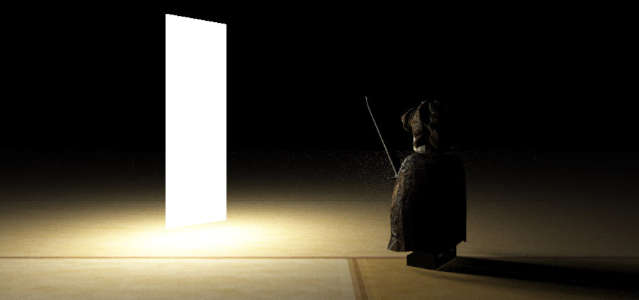
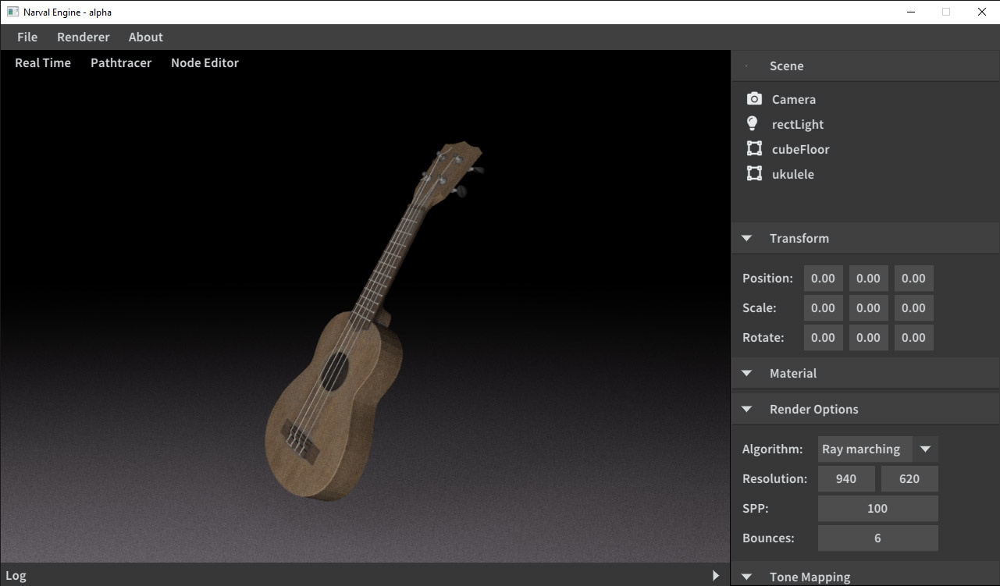
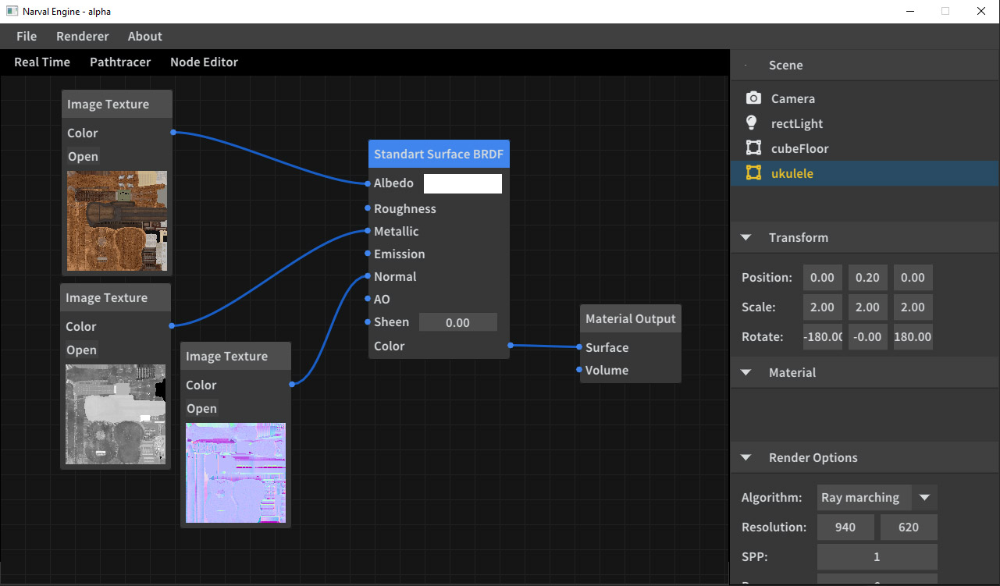
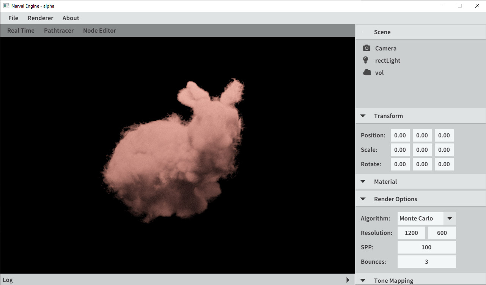
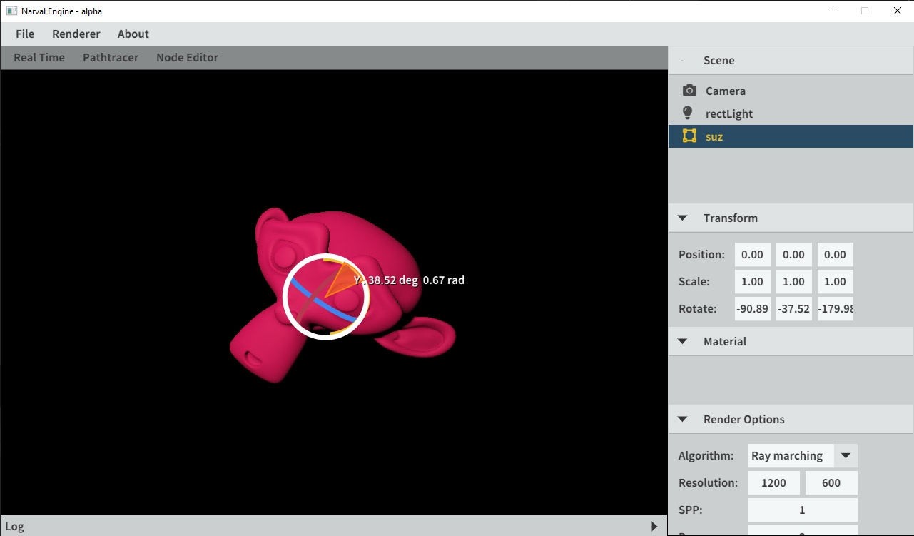
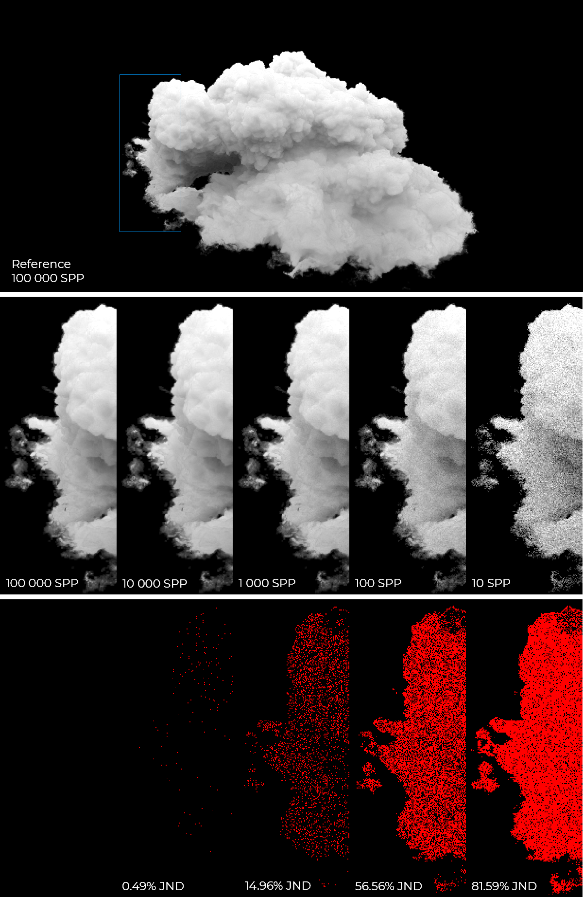

Hello and welcome!
I am MSc Igor B. Fernandes.
I've been fascinated by Computer Graphics my whole life. This fascination led me to pursue a Bachelor in Computer Science and then a Masters in Computer Science with emphasis in Computer Graphics, introducing myself into the world of research. I'm interested in volumetric light transport, path tracing, global illumination, procedural modeling, high-performance real-time rendering and other state of the art computer graphics as an art form to create such beautiful and inspiring works.
Highlighted projects
Narval Game Engine
Under active development the Narval game engine put emphasis in physically based rendering techniques using ray and path tracing. The goal is to achieve real-time results with physical foundations. It is written in C++ and OpenGL supporting multi-threaded CPU path tracing, Volumetric GPU path tracing and real-time Physically Based Rendering (PBR). It features support for a Scene and Node Editor, multiple materials, 3D object files, BVH for fast traversal of primitives and many more features. The github page with all the details can be found [here].
    An approximation to multiple scattering in volumetric illumination towards real-time rendering - 2019 - 2021
My master's work at UFRGS consisted of a perceptual analysis of volumetric rendering using the CIELAB metric. This study led to the proposition of a new real-time algorithm to approximate multiple scattering, usually only available in offline rendering, to real-time by exploring the human perceptual system to speed up computation. The figure below shows a Samples Per Pixel experiment zoomed in the area where we have thin details that show less convergence, thus more prone to noise. The second row shows the final rendered image and the third row shows the Just Noticeable Difference (JND) between the cloud above in the same column and the reference cloud with 100,000 SPP. The thesis text alongside all code and experimnents will be eventually available at my github.
